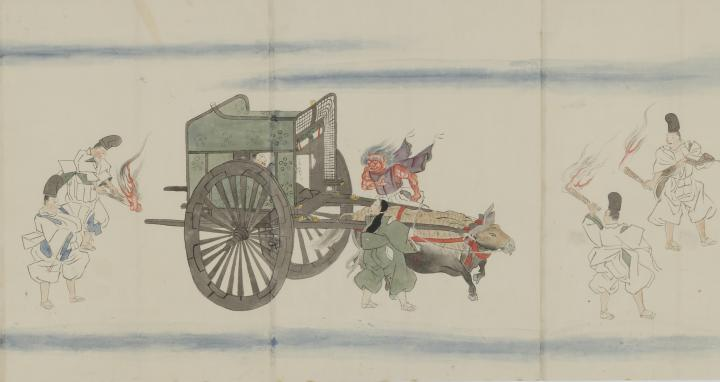

夜半、牛車に乗った長谷雄の前に現れた赤鬼。牛車の前後は松明を持った白丁4人がつき、牛飼いの童ともども出現した鬼を見ている。
著作者：村田嘉言写／出典：親書誌：U426_nichibunken_0062：中納言長谷雄卿圖巻；チュウナゴンハセオキョウエマキ／日付：2007／資源識別子：U426_nichibunken_0062_0003_0000
Copyright (c)2010- International Research Center for Japanese Studies, Kyoto, Japan. All rights reserved.